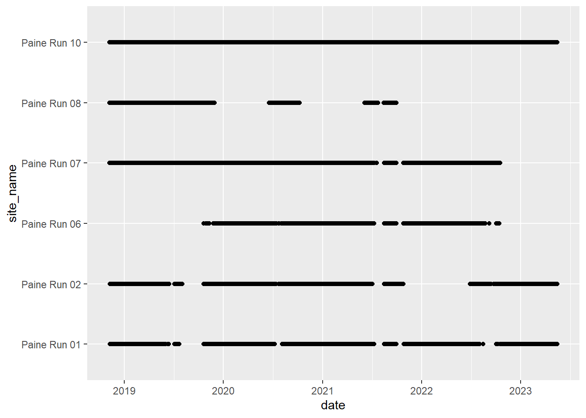
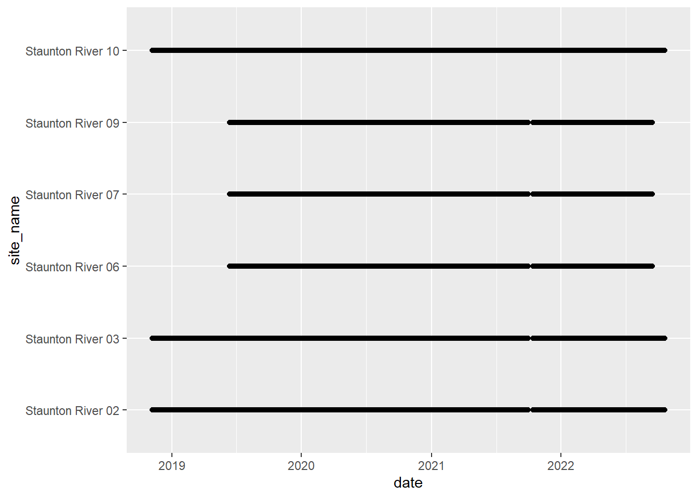
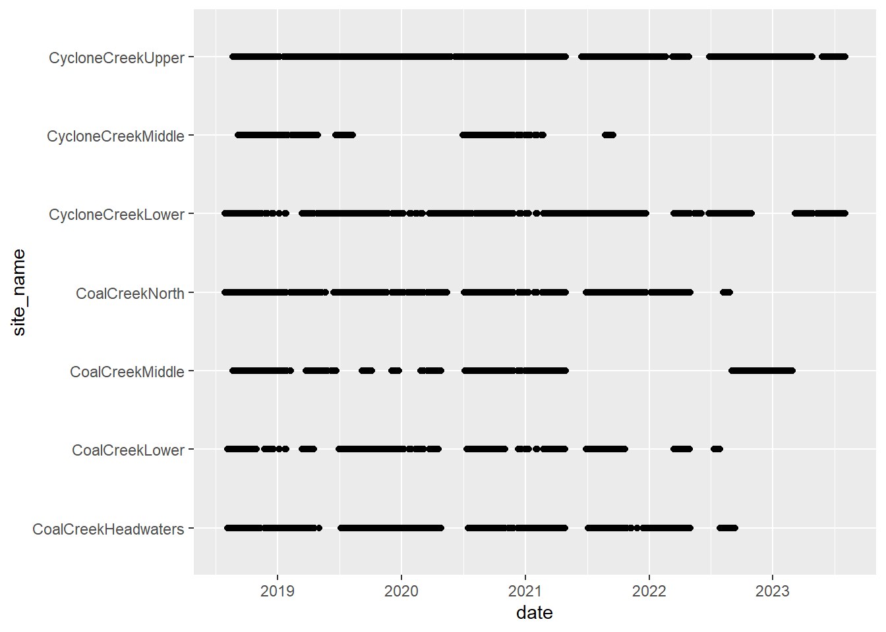
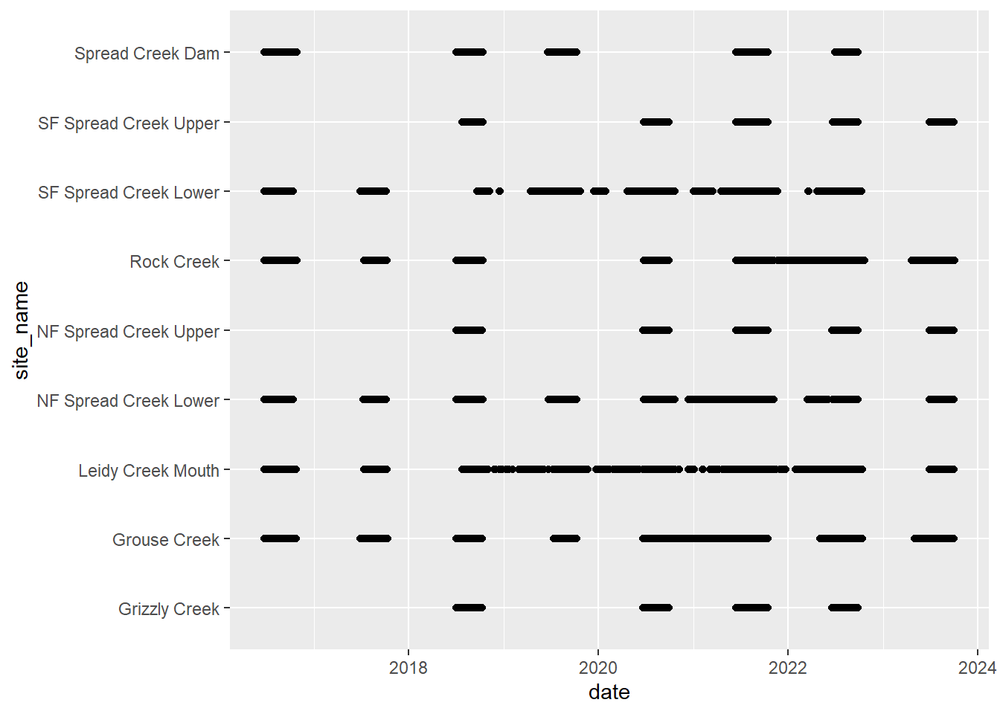
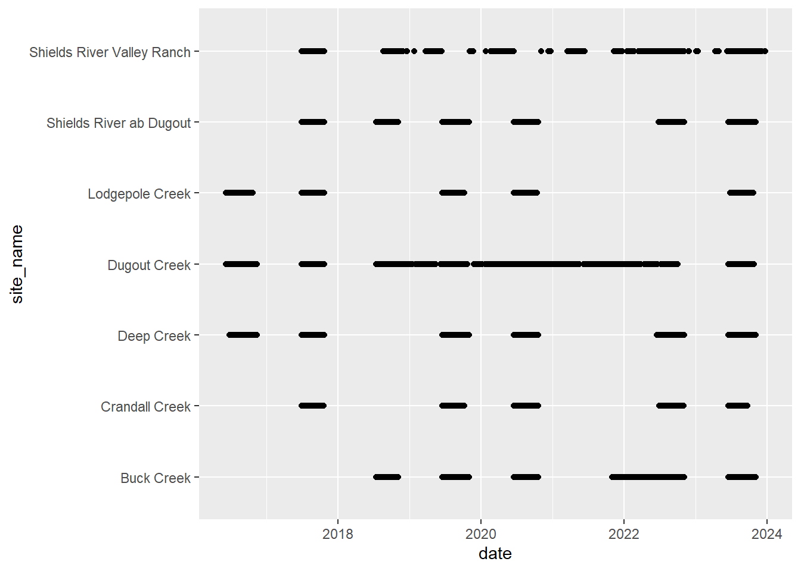
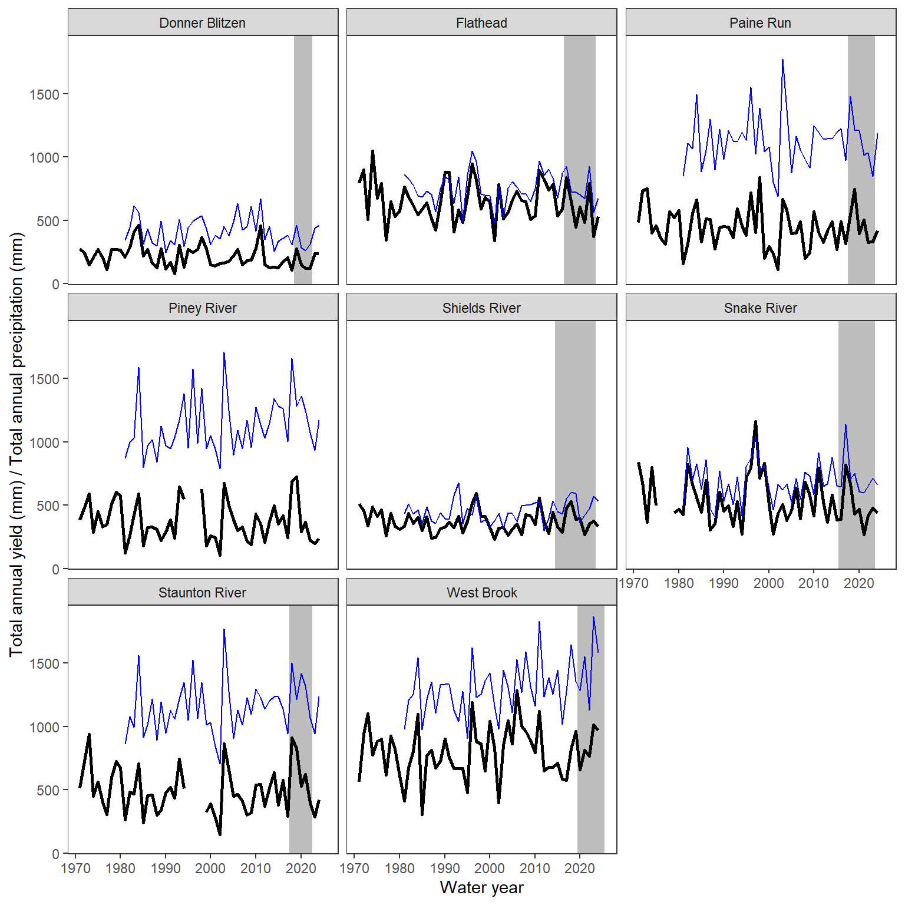

Code
siteinfo <- read_csv("C:/Users/jbaldock/OneDrive - DOI/Documents/USGS/EcoDrought/EcoDrought Working/Data/EcoDrought_SiteInformation.csv")
datatable(siteinfo)Significance: Headwater streams account for a majority of river networks worldwide and have a disproportionately large influence on the functioning of aquatic ecosystems. Headwater streams also support critical habitat for many species, including cold-water fishes, many of which are declining or at risk of extinction.
Problem: Headwater streams are largely underrepresented in streamflow monitoring networks, which place greater emphasis on mainstem rivers. As a result, less is known about how headwaters respond to changing water availability. Headwater streams therefore represent a blind spot in understanding flow regime variability and assessing the vulnerability of cold-water fish to changing climatic conditions, including the increasing frequency and severity of drought.
Existential question: How do streamflow regimes vary spatially in headwater stream networks and what does this imply about the sensitivity of these systems (and the species they support) to changing climatic conditions (i.e., drought)?
Objectives:
Conceptual Model: Based on our findings, develop a conceptual framework synthesizing the linkages between climate, catchment characteristics, and spatial heterogeneity in headwater streamflow regimes, and expected changes in these relationships under future drought conditions * Extending “The Natural Flow Regime” - understanding and quantifying flow regime diversity in headwater stream networks
Boxes: Use boxes to highlight additional details of the data, vignettes, and case studies that demonstrate spatiotemporal streamflow heterogeneity (and how this changes with prevailing climate). All optional…TBD.
View site information
siteinfo <- read_csv("C:/Users/jbaldock/OneDrive - DOI/Documents/USGS/EcoDrought/EcoDrought Working/Data/EcoDrought_SiteInformation.csv")
datatable(siteinfo)Map sites
siteinfo_sp <- st_as_sf(siteinfo, coords = c("long", "lat"), crs = 4326)
mapview(siteinfo_sp, zcol = "designation")Little g daily data
# flow/yield (and temp) data
dat <- read_csv("C:/Users/jbaldock/OneDrive - DOI/Documents/USGS/EcoDrought/EcoDrought Working/Data/EcoDrought_FlowTempData_DailyWeekly.csv") %>%
mutate(site_name = dplyr::recode(site_name, "Leidy Creek Mouth NWIS" = "Leidy Creek Mouth", "SF Spread Creek Lower NWIS" = "SF Spread Creek Lower", "Dugout Creek NWIS" = "Dugout Creek", "Shields River ab Smith NWIS" = "Shields River Valley Ranch")) %>%
filter(!site_name %in% c("Avery Brook NWIS", "West Brook 0", "BigCreekMiddle", # drop co-located sites
"South River Conway NWIS", "North Fork Flathead River NWIS", # drop big Gs
"Pacific Creek at Moran NWIS", "Shields River nr Livingston NWIS", # drop big Gs
"Donner Blitzen River nr Frenchglen NWIS", # drop big Gs
"WoundedBuckCreek")) %>% # drop little g outside of focal basin
group_by(site_name, basin, subbasin, region, date) %>%
summarize(flow_mean = mean(flow_mean),
tempc_mean = mean(tempc_mean),
Yield_mm = mean(Yield_mm),
Yield_filled_mm = mean(Yield_filled_mm)) %>%
ungroup()
# add water/climate year variables and fill missing dates
dat <- fill_missing_dates(dat, dates = date, groups = site_name)
dat <- add_date_variables(dat, dates = date, water_year_start = 10)Clean and bind little g data (for each basin, restrict to time period for which data quality/availability is ~consistent)
dat_clean <- bind_rows(
dat %>% filter(site_name %in% unlist(siteinfo %>% filter(subbasin == "West Brook") %>% select(site_name)), year(date) >= 2020, date <= date("2025-01-03")) %>%
mutate(Yield_filled_mm = ifelse(site_name == "West Brook Upper" & date > date("2024-10-06"), NA, Yield_filled_mm)) %>%
mutate(Yield_filled_mm = ifelse(site_name == "Mitchell Brook" & date > date("2021-02-28") & date < date("2021-03-26"), NA, Yield_filled_mm)) %>%
mutate(Yield_filled_mm = ifelse(site_name == "Mitchell Brook" & date > date("2021-11-01") & date < date("2022-05-01"), NA, Yield_filled_mm)) %>%
mutate(Yield_filled_mm = ifelse(site_name == "Jimmy Brook" & date > date("2024-12-10"), NA, Yield_filled_mm)) %>%
mutate(subbasin = "West Brook"),
dat %>% filter(site_name %in% unlist(siteinfo %>% filter(subbasin == "Paine Run") %>% select(site_name)), date >= as_date("2018-11-07"), date <= as_date("2023-05-15")) %>% mutate(subbasin = "Paine Run"),
dat %>% filter(site_name %in% unlist(siteinfo %>% filter(subbasin == "Staunton River") %>% select(site_name)), date >= as_date("2018-11-07"), date <= as_date("2022-10-19")) %>% mutate(subbasin = "Staunton River"),
dat %>% filter(site_name %in% c(unlist(siteinfo %>% filter(subbasin == "Big Creek") %>% select(site_name)), "North Fork Flathead River NWIS"), date >= date("2018-08-08"), date <= date("2023-08-03"), site_name != "SkookoleelCreek", Yield_filled_mm > 0) %>% mutate(subbasin = "Big Creek"),
dat %>% filter(site_name %in% c(unlist(siteinfo %>% filter(subbasin == "Coal Creek") %>% select(site_name)), "North Fork Flathead River NWIS"), date >= date("2018-07-29"), date <= date("2023-08-03")) %>% mutate(subbasin = "Coal Creek"),
dat %>% filter(site_name %in% c(unlist(siteinfo %>% filter(subbasin == "McGee Creek") %>% select(site_name)), "North Fork Flathead River NWIS"), date >= date("2017-07-30"), date <= date("2023-12-11")) %>% mutate(subbasin = "McGee Creek"),
dat %>% filter(subbasin == "Snake River", date >= date("2016-04-01"), date <= date("2023-10-03"), site_name != "Leidy Creek Upper") %>% mutate(subbasin = "Snake River"),
dat %>% filter(subbasin == "Shields River", date >= date("2016-04-01"), date <= date("2023-12-31"), site_name != "Brackett Creek") %>%
mutate(logYield = log10(Yield_filled_mm)) %>% mutate(subbasin = "Shields River"),
dat %>% filter(subbasin == "Duck Creek", date >= date("2015-04-01"), date <= date("2023-12-31")) %>% mutate(subbasin = "Duck Creek"),
dat %>% filter(subbasin == "Donner Blitzen", date >= as_date("2019-04-23"), date <= as_date("2022-12-31"), !site_name %in% c("Indian Creek NWIS", "Little Blizten River NWIS")) %>% mutate(subbasin = "Donner Blitzen")
) %>%
filter(Yield_filled_mm > 0) %>%
mutate(logYield = log10(Yield_filled_mm),
designation = "little",
doy_calendar = yday(date)) %>%
select(-Yield_mm) %>%
rename(Yield_mm = Yield_filled_mm)
head(dat_clean)# A tibble: 6 × 16
site_name basin subbasin region date flow_mean tempc_mean Yield_mm
<chr> <chr> <chr> <chr> <date> <dbl> <dbl> <dbl>
1 Avery Brook West Bro… West Br… Mass 2020-01-08 5.96 0.594 1.99
2 Avery Brook West Bro… West Br… Mass 2020-01-09 4.81 0.0336 1.61
3 Avery Brook West Bro… West Br… Mass 2020-01-10 4.88 0.363 1.63
4 Avery Brook West Bro… West Br… Mass 2020-01-11 6.43 1.77 2.15
5 Avery Brook West Bro… West Br… Mass 2020-01-12 21.2 2.81 7.08
6 Avery Brook West Bro… West Br… Mass 2020-01-13 14.3 1.92 4.78
# ℹ 8 more variables: CalendarYear <dbl>, Month <dbl>, MonthName <fct>,
# WaterYear <dbl>, DayofYear <dbl>, logYield <dbl>, designation <chr>,
# doy_calendar <dbl>View streamflow data availability by subbasin and site





Write to file
write_csv(dat_clean, "C:/Users/jbaldock/OneDrive - DOI/Documents/USGS/EcoDrought/EcoDrought Working/EcoDrought-Analysis/Qualitative/LittleG_data_clean.csv")Load big/super G data
nwis_daily <- read_csv("C:/Users/jbaldock/OneDrive - DOI/Documents/USGS/EcoDrought/EcoDrought Working/Data/EcoDrought_NWIS_FlowTempData_Raw_Daily.csv") %>%
filter(designation == "big",
year(date) >= 1970,
site_name != "Shields River nr Livingston NWIS") %>%
mutate(flowcfs = ifelse(site_name == "Rapidan River NWIS" & date > date("1995-06-26") & date < date("1995-07-01"), NA, flowcfs),
flow_mean_cms = flowcfs*0.02831683199881,
area_sqkm = area_sqmi*2.58999)
# sites
sites <- unique(nwis_daily$site_name)
# site-specific basin area in square km
basinarea <- nwis_daily %>% filter(!is.na(site_id)) %>% group_by(site_name) %>% summarize(area_sqkm = unique(area_sqkm))
# calculate yield
yield_list <- list()
for (i in 1:length(sites)) {
d <- nwis_daily %>% filter(site_name == sites[i])
ba <- unlist(basinarea %>% filter(site_name == sites[i]) %>% select(area_sqkm))
yield_list[[i]] <- add_daily_yield(data = d, values = flow_mean_cms, basin_area = as.numeric(ba))
}
nwis_daily_wyield <- do.call(rbind, yield_list)
dat_clean_big <- nwis_daily_wyield %>%
select(site_name, basin, subbasin, region, date, Yield_mm, tempc, flowcfs) %>%
mutate(logYield = log10(Yield_mm), doy_calendar = yday(date)) %>%
rename(tempc_mean = tempc, flow_mean = flowcfs)
# add water/climate year variables and fill missing dates
dat_clean_big <- fill_missing_dates(dat_clean_big, dates = date, groups = site_name)
dat_clean_big <- add_date_variables(dat_clean_big, dates = date, water_year_start = 10)
head(dat_clean_big)# A tibble: 6 × 15
site_name basin subbasin region date Yield_mm tempc_mean flow_mean
<chr> <chr> <chr> <chr> <date> <dbl> <dbl> <dbl>
1 South River Co… West… West Br… Mass 1970-01-01 1.81 NA 46
2 South River Co… West… West Br… Mass 1970-01-02 1.69 NA 43
3 South River Co… West… West Br… Mass 1970-01-03 1.61 NA 41
4 South River Co… West… West Br… Mass 1970-01-04 1.53 NA 39
5 South River Co… West… West Br… Mass 1970-01-05 1.49 NA 38
6 South River Co… West… West Br… Mass 1970-01-06 1.49 NA 38
# ℹ 7 more variables: logYield <dbl>, doy_calendar <dbl>, CalendarYear <dbl>,
# Month <dbl>, MonthName <fct>, WaterYear <dbl>, DayofYear <dbl>Write to file
write_csv(dat_clean_big, "C:/Users/jbaldock/OneDrive - DOI/Documents/USGS/EcoDrought/EcoDrought Working/EcoDrought-Analysis/Qualitative/BigG_data_clean.csv")View big G streamflow time series data
dat_clean_big %>% ggplot() + geom_line(aes(x = date, y = logYield)) + facet_wrap(~site_name, nrow = 8) + theme_bw()Download Daymet precip data and summarize by water year
# big G site lat/long
mysites <- nwis_daily %>% group_by(site_name, basin, subbasin, region) %>% summarize(lat = unique(lat), long = unique(long)) %>% ungroup()
# download point location Daymet data
climlist <- vector("list", length = dim(mysites)[1])
for (i in 1:dim(mysites)[1]) {
clim <- download_daymet(site = mysites$site_name[i], lat = mysites$lat[i], lon = mysites$long[i], start = 1980, end = 2024, internal = T)
climlist[[i]] <- tibble(clim$data) %>%
mutate(air_temp_mean = (tmax..deg.c. + tmin..deg.c.)/2,
date = as.Date(paste(year, yday, sep = "-"), "%Y-%j"),
site_name = mysites$site_name[i]) %>%
select(12,2,11,10,4,6) %>% rename(precip_mmday = 5, swe_kgm2 = 6)
print(i)
}[1] 1[1] 2[1] 3[1] 4[1] 5[1] 6[1] 7[1] 8# combine and add water years
climdf <- do.call(rbind, climlist) %>% left_join(mysites) %>% mutate(year = year(date))
climdf <- add_date_variables(climdf, dates = date, water_year_start = 10)
# calculate total annual precipitation in mm, by site and water year
climdf_summ <- climdf %>%
group_by(site_name, basin, subbasin, region, WaterYear) %>%
summarize(precip_total = sum(precip_mmday), sampsize = n()) %>%
mutate(precip_total_z = scale(precip_total)[,1]) %>%
ungroup() %>%
filter(sampsize >= 350)Write to file(s)
write_csv(climdf, "C:/Users/jbaldock/OneDrive - DOI/Documents/USGS/EcoDrought/EcoDrought Working/EcoDrought-Analysis/Qualitative/Daymet_climate.csv")
write_csv(climdf_summ, "C:/Users/jbaldock/OneDrive - DOI/Documents/USGS/EcoDrought/EcoDrought Working/EcoDrought-Analysis/Qualitative/Daymet_climate_summary.csv")Calculate annual water availability at big g as sum of daily yield values…retain only years with >95% data coverage (at least 350 days)
wateravail_sum <- dat_clean_big %>%
filter(!is.na(Yield_mm), Month %in% c(7:9)) %>%
group_by(basin, site_name, WaterYear) %>%
summarize(sampsize = n(), totalyield_sum = sum(Yield_mm, na.rm = TRUE)) %>%
mutate(totalyield_sum_z = scale(totalyield_sum)[,1]) %>%
ungroup() %>%
filter(sampsize >= 85) %>%
complete(basin, WaterYear = 1971:2024, fill = list(sampsize = NA, totalyield = NA)) %>%
select(-sampsize)
wateravail <- dat_clean_big %>%
filter(!is.na(Yield_mm)) %>%
group_by(basin, site_name, WaterYear) %>%
summarize(sampsize = n(), totalyield = sum(Yield_mm, na.rm = TRUE)) %>%
mutate(totalyield_z = scale(totalyield)[,1]) %>%
ungroup() %>%
filter(sampsize >= 350) %>%
complete(basin, WaterYear = 1971:2024, fill = list(sampsize = NA, totalyield = NA)) %>%
left_join(wateravail_sum)
# get range of years for little g data
daterange <- dat_clean %>% group_by(basin) %>% summarize(minyear = year(min(date)), maxyear = year(max(date)))
# spread ecod years
mylist <- vector("list", length = dim(daterange)[1])
for (i in 1:dim(daterange)[1]) {
mylist[[i]] <- tibble(basin = daterange$basin[i], WaterYear = seq(from = daterange$minyear[i], to = daterange$maxyear[i], by = 1))
}
yrdf <- do.call(rbind, mylist) %>% mutate(ecodyr = "yes")Write water availability to file
write_csv(wateravail, "C:/Users/jbaldock/OneDrive - DOI/Documents/USGS/EcoDrought/EcoDrought Working/EcoDrought-Analysis/Qualitative/BigG_wateravailability_annual.csv")View time series and scatter plots of big G water availability (total annual yield, sum of daily values, black lines) and precipitation (total annual precip, blues lines). Note that the panel labels indicate basins, not NWIS gage names. In the manuscript, pair these plots with CONUS map and detailed inset maps of focal basins (Figure 1)
ggplot() +
geom_rect(data = daterange, aes(xmin = minyear-0.5, xmax = maxyear+0.5, ymin = -Inf, ymax = +Inf), fill = "grey") +
geom_line(data = wateravail, aes(x = WaterYear, y = totalyield), linewidth = 1) +
geom_line(data = climdf_summ, aes(x = WaterYear, y = precip_total), linewidth = 0.5, col = "blue") +
facet_wrap(~basin) +
xlab("Water year") + ylab("Total annual yield (mm) / Total annual precipitation (mm)") +
theme_bw() + theme(panel.grid.major = element_blank(), panel.grid.minor = element_blank())
ggplot() +
geom_rect(data = daterange, aes(xmin = minyear-0.5, xmax = maxyear+0.5, ymin = -Inf, ymax = +Inf), fill = "grey") +
geom_line(data = wateravail, aes(x = WaterYear, y = totalyield_z), linewidth = 1) +
geom_line(data = climdf_summ, aes(x = WaterYear, y = precip_total_z), linewidth = 0.5, col = "blue") +
facet_wrap(~basin) +
xlab("Water year") + ylab("Total annual yield (scaled) / Total annual precipitation (scaled)") +
theme_bw() + theme(panel.grid.major = element_blank(), panel.grid.minor = element_blank())
wateravail %>% select(-sampsize) %>% left_join(climdf_summ %>% select(-sampsize)) %>% left_join(yrdf) %>%
ggplot(aes(x = precip_total_z, y = totalyield_z)) +
geom_point(aes(color = ecodyr)) +
facet_wrap(~basin) +
xlab("Total annual precipitation (scaled)") + ylab("Total annual yield (scaled)") +
theme_bw() + theme(panel.grid.major = element_blank(), panel.grid.minor = element_blank(), legend.position = "none") +
stat_cor(method = "pearson", aes(label = ..r.label..))